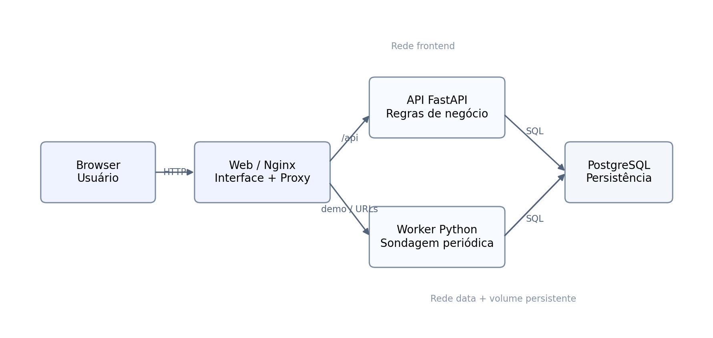

PUC-Campinas · Novembro de 2026
Este artigo apresenta o desenvolvimento do Uptime Monitor, uma aplicação web voltada ao monitoramento de disponibilidade de serviços HTTP e HTTPS. O projeto foi elaborado para atender aos requisitos da disciplina de Computação em Nuvem, priorizando uma arquitetura simples, funcional e facilmente demonstrável em ambiente local por meio de contêineres Docker. A solução é composta por quatro serviços: interface web com Nginx, API REST em FastAPI, worker de sondagem periódica e banco de dados PostgreSQL. Como resultado, obteve-se uma aplicação capaz de cadastrar monitores, verificar periodicamente a disponibilidade dos endereços, armazenar histórico de verificações e apresentar indicadores de latência e disponibilidade em painel web. O trabalho também evidencia conceitos centrais da disciplina, como construção de imagens, orquestração com Docker Compose, redes internas, persistência em volume e isolamento entre serviços.
Palavras-chave: computação em nuvem; Docker; Docker Compose; monitoramento; serviços web.
Sistemas distribuídos e aplicações em nuvem dependem da disponibilidade contínua de serviços web. Em cenários reais, falhas de conectividade, indisponibilidade do servidor ou aumento excessivo de latência podem degradar a experiência do usuário e comprometer a confiabilidade da aplicação. Nesse contexto, ferramentas de observabilidade e monitoramento tornam-se essenciais.
O objetivo deste projeto é desenvolver uma aplicação web simples, porém completa o suficiente para demonstrar os principais conteúdos estudados na disciplina. Em vez de construir uma solução muito extensa, a proposta foi adotar um domínio coerente com infraestrutura e operação de sistemas: o monitoramento de disponibilidade de serviços HTTP.
O projeto foi guiado por quatro metas principais:
O Uptime Monitor permite que o usuário cadastre endereços HTTP ou HTTPS e acompanhe o seu estado por meio de um painel web. Cada monitor cadastrado possui um nome e uma URL. Periodicamente, um serviço de sondagem realiza uma requisição HTTP para cada endereço e registra o resultado no banco de dados.
Com base nesses registros, a interface apresenta:
Além disso, a aplicação possui uma funcionalidade de demonstração local, que cadastra dois alvos internos: um endpoint que responde com sucesso e outro que responde com erro. Dessa forma, é possível demonstrar a aplicação mesmo que a internet não esteja disponível no momento da apresentação.
A arquitetura foi organizada em quatro serviços independentes, executados por meio de Docker Compose. Essa divisão favorece o isolamento de responsabilidades e demonstra com clareza o modelo de composição de serviços.

A Tabela 1 resume os componentes implementados.
| Serviço | Tecnologia | Responsabilidade principal |
|---|---|---|
| Web | Nginx + HTML/CSS/JS | Servir a interface web, arquivos estáticos e atuar como proxy reverso da API |
| API | FastAPI | Receber requisições do frontend, validar dados, consultar e alterar o banco |
| Worker | Python | Realizar sondagens periódicas dos sites e gravar os resultados |
| Banco de dados | PostgreSQL | Persistir monitores e histórico de verificações |
A aplicação utiliza duas redes Docker lógicas:
Somente o Nginx publica porta para o host, e essa exposição é feita
apenas em localhost, o que reforça o isolamento e evita o
acesso direto ao banco.
A escolha por quatro serviços atende com folga o requisito mínimo de três serviços e demonstra um cenário clássico de arquitetura em camadas. Além disso, há pelo menos dois serviços de implementação própria: a API e o worker. Isso evita que o projeto seja apenas uma composição de imagens prontas do Docker Hub, o que foi explicitamente exigido no enunciado.
O projeto foi organizado de forma modular, separando backend, frontend, testes e documentação. A estrutura principal está resumida abaixo.
uptime-monitor/
├─ compose.yaml
├─ backend/
│ ├─ Dockerfile
│ ├─ api.py
│ ├─ db.py
│ ├─ probe.py
│ ├─ schema.sql
│ └─ worker.py
├─ web/
│ ├─ index.html
│ ├─ styles.css
│ ├─ app.js
│ └─ nginx.conf
├─ tests/
│ └─ test_app.py
└─ docs/
├─ APRESENTACAO.md
└─ artigo-uptime-monitor.mdEssa organização facilita tanto o desenvolvimento quanto a compreensão do projeto durante a avaliação.
O banco PostgreSQL armazena duas entidades principais:
A relação entre as tabelas é de um para muitos: um site possui várias verificações ao longo do tempo. Esse modelo é suficiente para calcular disponibilidade acumulada e construir o histórico mostrado na interface.
A API foi implementada com FastAPI por oferecer simplicidade, boa organização e facilidade de definição de contratos HTTP. Os principais endpoints são apresentados na Tabela 2.
| Método | Endpoint | Finalidade |
|---|---|---|
| GET | /api/health |
verifica a saúde da API e a conexão com o banco |
| GET | /api/sites |
lista os monitores cadastrados e o último resultado conhecido |
| POST | /api/sites |
cadastra um novo monitor |
| GET | /api/sites/{id}/history |
retorna o histórico recente do monitor selecionado |
| DELETE | /api/sites/{id} |
remove o monitor e seu histórico |
| POST | /api/demo |
cria os monitores de demonstração local |
Antes de persistir um novo monitor, a API valida o formato do nome e da URL, aceitando apenas endereços HTTP e HTTPS. Essa validação evita entradas inválidas e reforça a confiabilidade da aplicação.
O worker executa continuamente um ciclo de verificação dos sites cadastrados. Em cada ciclo, ele consulta a lista de monitores no banco, realiza as requisições HTTP e grava os resultados obtidos.
A lógica de monitoramento segue os critérios abaixo:
Após concluir um ciclo, o worker aguarda um intervalo configurado e reinicia o processo. Esse comportamento permite que o painel seja atualizado continuamente.
A interface foi construída com HTML, CSS e JavaScript puros, sem dependência de frameworks externos. Essa escolha torna a solução mais leve e facilita a inspeção do código durante a apresentação.
As principais funcionalidades da interface são:
Do ponto de vista visual, a UI foi projetada para manter aparência limpa, leitura clara e navegação direta, sem exageros visuais que prejudiquem a objetividade acadêmica do sistema.
A orquestração é feita com docker compose, responsável
por subir os quatro serviços, criar as redes e provisionar o volume
persistente do banco.
Os serviços api e worker utilizam um
Dockerfile próprio baseado em Python, atendendo ao
requisito de possuir pelo menos um serviço de implementação própria. Na
prática, uma única imagem é construída e reutilizada pelos dois
serviços, alterando apenas o comando de inicialização.
O PostgreSQL utiliza um volume nomeado para armazenar os dados. Isso
permite que os registros sejam mantidos mesmo após a remoção dos
contêineres com docker compose down, desde que o volume não
seja removido com a opção -v.
Foram definidos healthchecks e dependências entre os serviços para reduzir falhas de inicialização. Dessa forma, a aplicação aguarda a disponibilidade do banco e da API antes de liberar os componentes dependentes.
Após extrair o projeto, basta abrir a pasta raiz e executar:
docker compose up -d --buildEm seguida, o painel pode ser acessado em
http://localhost:8080.
Para uma demonstração rápida, o usuário pode clicar em Carregar demonstração, o que cadastra dois serviços internos:
/demo/online: retorna sucesso;/demo/offline: retorna erro 503.Com isso, a aplicação já apresenta um cenário completo de monitoramento, exibindo um serviço disponível e outro indisponível.
O fluxo típico de uso é o seguinte:
O sistema foi validado por meio de testes automatizados e de inspeção funcional da interface.
Foram executados testes direcionados cobrindo, entre outros pontos:
Ao final, 13 de 13 testes foram aprovados no ambiente de desenvolvimento utilizado para a construção do projeto.
Em execução, a aplicação foi capaz de:
Esses resultados mostram que a solução atende ao objetivo principal proposto para o trabalho.
Por se tratar de um projeto acadêmico com foco em simplicidade e demonstração local, algumas funcionalidades comuns em soluções profissionais não foram implementadas. Entre as limitações, destacam-se:
Como trabalhos futuros, seria possível adicionar autenticação, alertas em tempo real, dashboards mais avançados, configuração de intervalos por serviço e implantação em um provedor de nuvem.
O projeto Uptime Monitor atendeu aos requisitos propostos para o trabalho final da disciplina de Computação em Nuvem. A solução implementa uma aplicação web funcional, acessível por navegador e composta por múltiplos serviços containerizados. Além disso, apresenta pelo menos um serviço de implementação própria, organização estrutural adequada e elementos claros para demonstração prática em apresentação.
Do ponto de vista didático, o trabalho permitiu aplicar conceitos importantes de conteinerização, comunicação entre serviços, persistência, orquestração e isolamento. A escolha por um sistema de monitoramento de disponibilidade mostrou-se adequada por combinar simplicidade de implementação com boa coerência técnica em relação ao conteúdo da disciplina.
DOCKER INC. Docker documentation. Disponível em: https://docs.docker.com/. Acesso em: 25 nov. 2026.
FASTAPI. FastAPI documentation. Disponível em: https://fastapi.tiangolo.com/. Acesso em: 25 nov. 2026.
POSTGRESQL GLOBAL DEVELOPMENT GROUP. PostgreSQL documentation. Disponível em: https://www.postgresql.org/docs/. Acesso em: 25 nov. 2026.
NGINX. NGINX documentation. Disponível em: https://nginx.org/en/docs/. Acesso em: 25 nov. 2026.